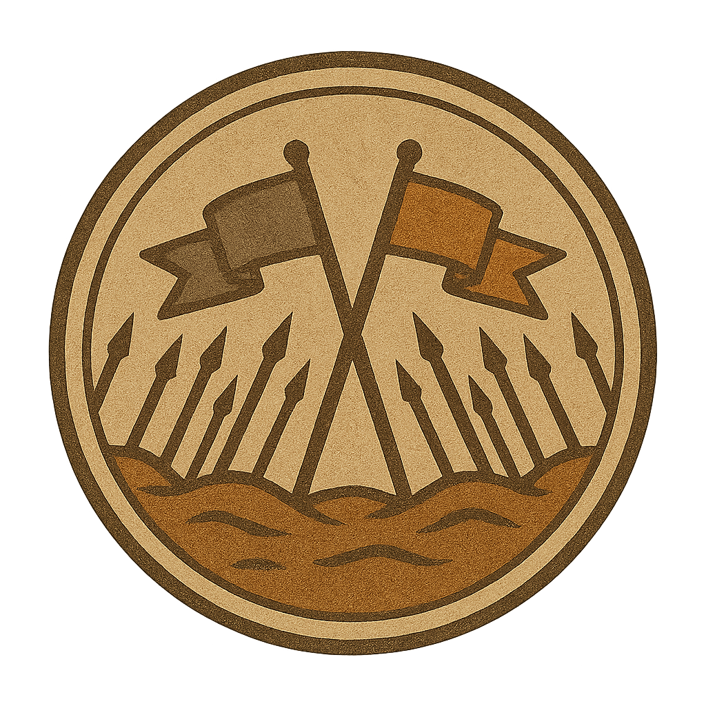

1627–164720 Jahre
Kriege Bürgerkrieg
Der Krieg der Prätendenten
Erster Bürgerkrieg
Der Krieg der Prätendenten war der blutigste und längste Bürgerkrieg in der Geschichte Aldrimars.
Überlieferung weiterlesen
Über einen Zeitraum von zwanzig Jahren verwüstete er das Königreich und drohte, die Linie des Königshauses vollständig auszulöschen. Der verheerende Konflikt entflammte nach der brutalen Ermordung des frisch gekrönten Hochkönigs, die durch ein heimtückisches Mordkomplott zweier seiner Halbgeschwister inszeniert wurde. Diese Tat löste einen erbitterten Kampf um den Thron aus, bei dem verschiedene Fraktionen und Prätendenten um die Macht rangen, während das Land in Blut und Chaos versank.